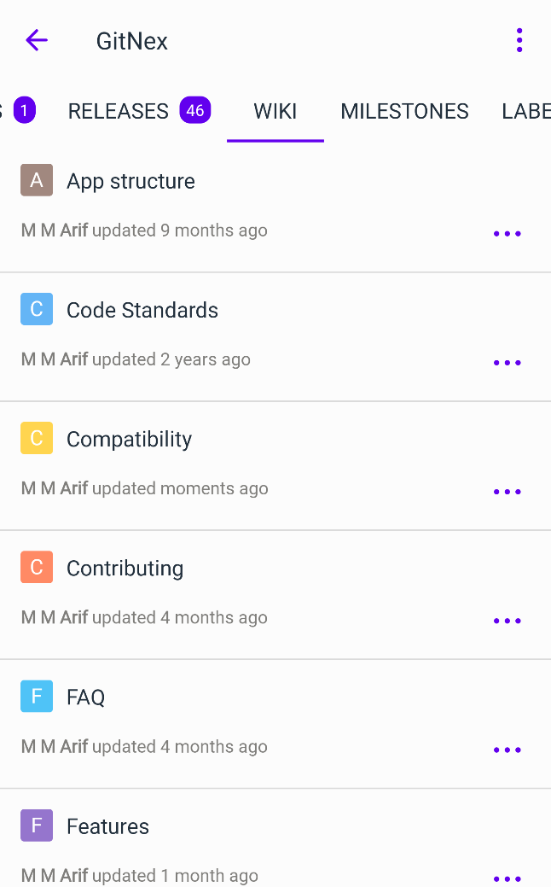
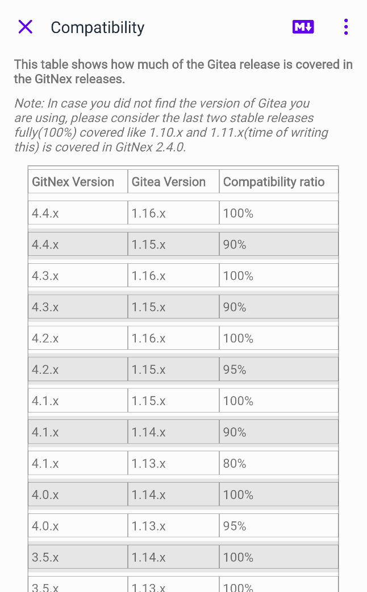
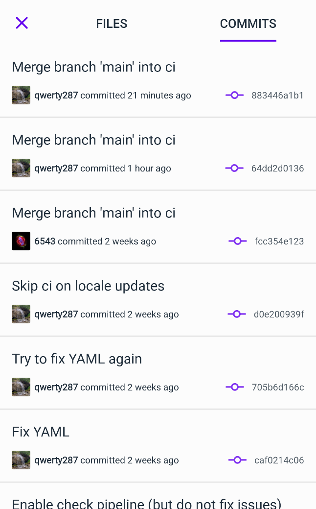
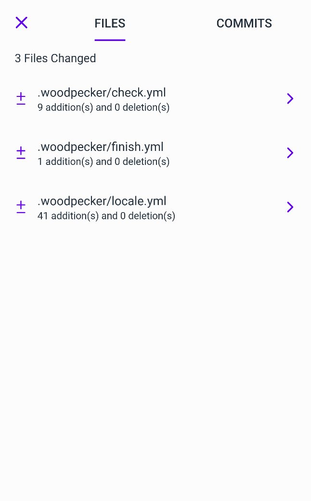

GitNex 4.4.0 got wiki pages support to list and view them. You can also quickly switch the preview mode.

Wiki pages list
2. Create/edit/delete wiki page
You can also create a wiki page, edit it when needed and delete it if it's not needed anymore. While creating/editing you can preview the markdown code.
You will need to be an Admin to perform these actions.

Wiki page
3. Add support for PR commits
Pull requests are the core of any repository management. With PR comes the files changes. We have added commits to PR beside Files in this release.

PR commits

PR files
Bug fixes
- Fix crash on commit view in some cases
- Fix missing options when coming from notifications for PR
- Fix crash on commenting on diff code
- Fix crash on commenting on PR when coming from notification
- Fix crash on deleted forks
- Fix crash on closing and opening an issue from My Issues
- Fix crash on repository info view in some cases
- Fix crashes on login with spaces, new lines and unwanted characters